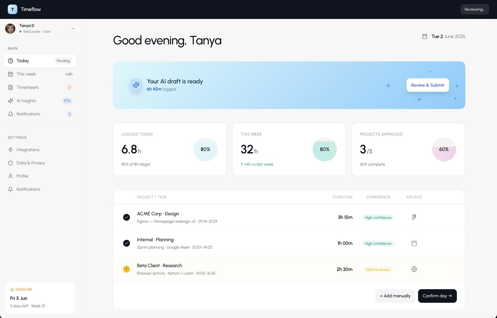
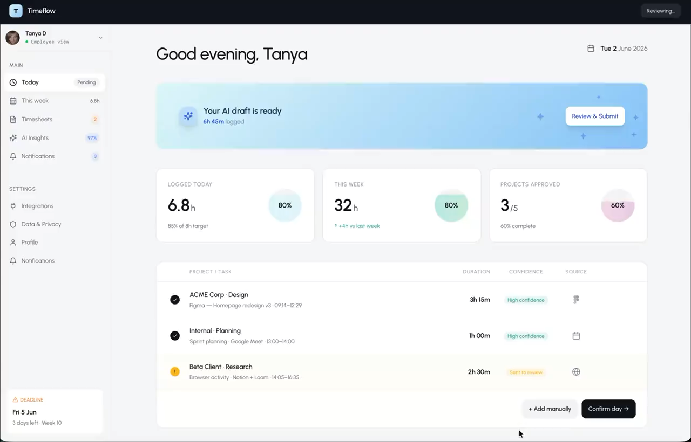
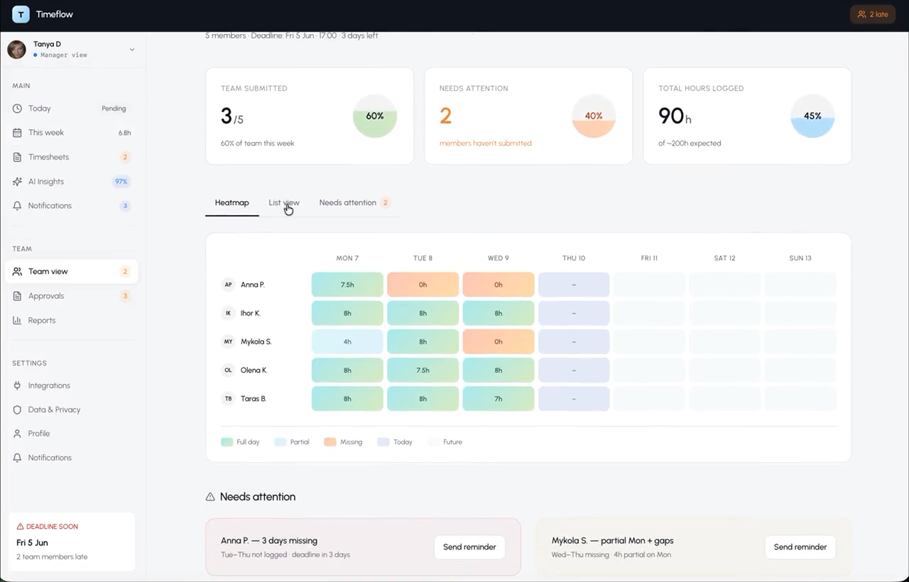
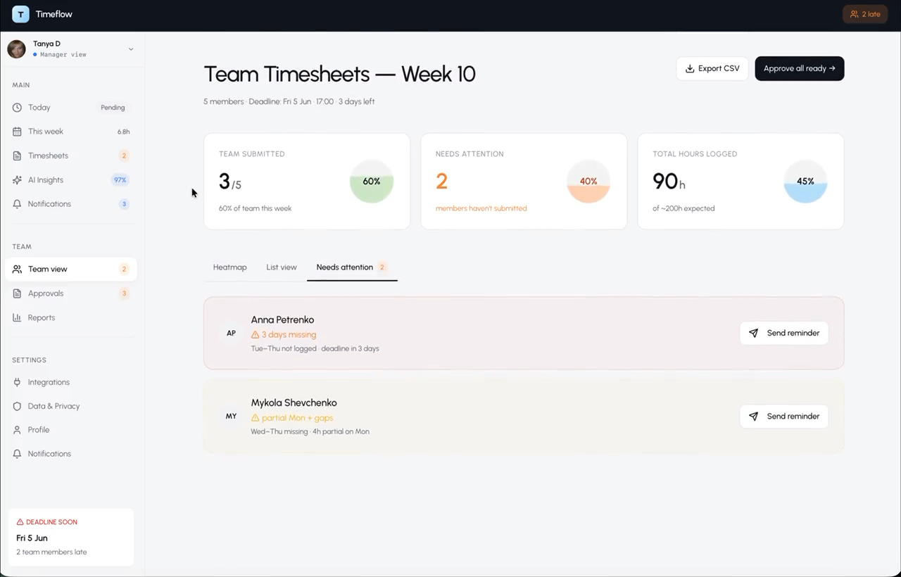
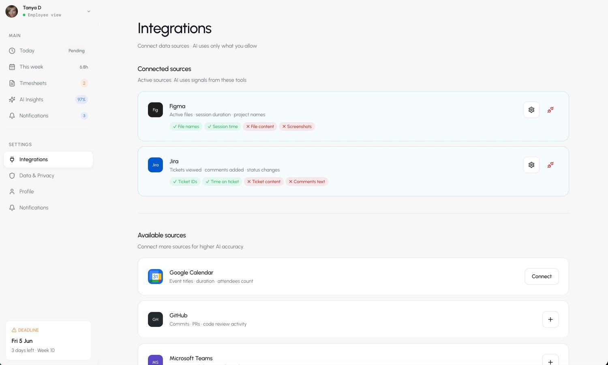
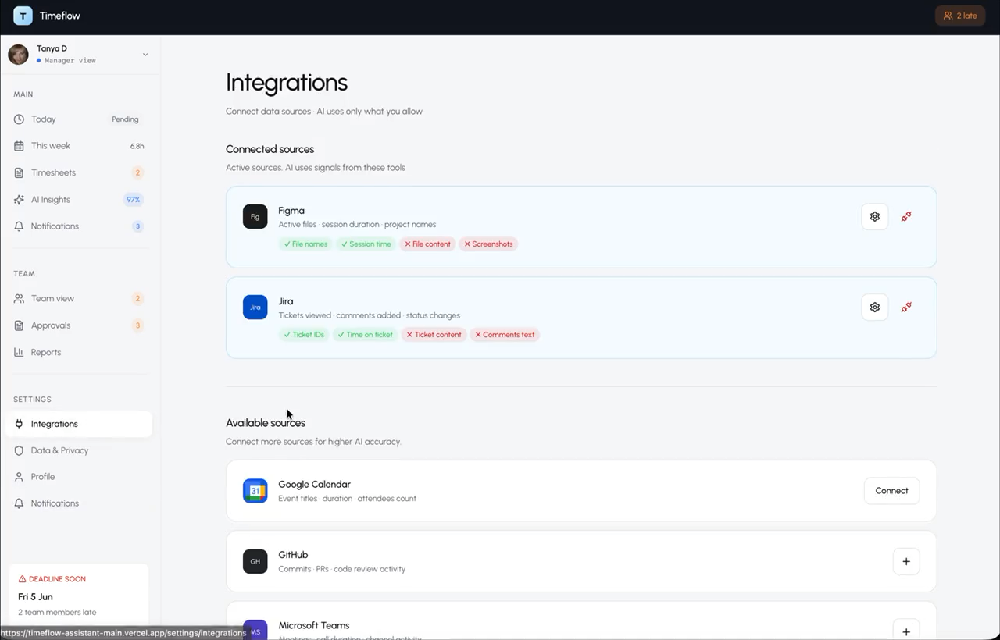
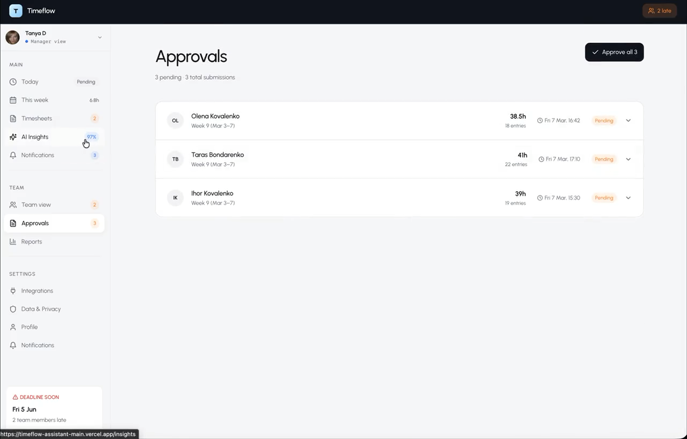
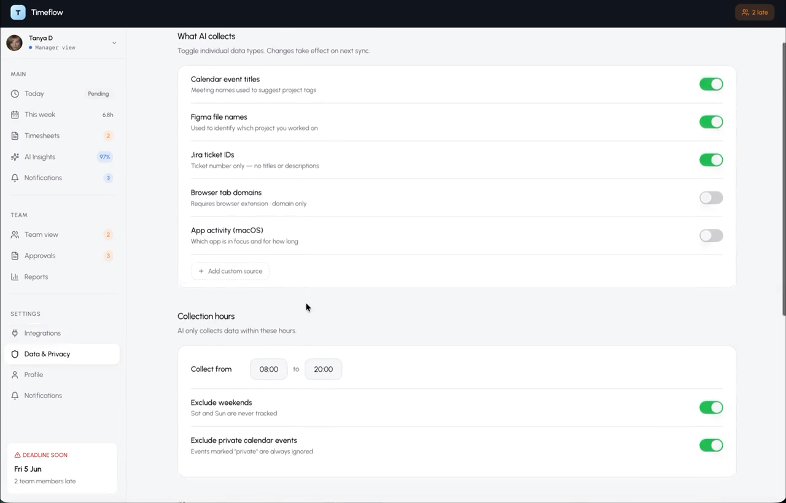

Foundations
Colour roles, Urbanist typography and restrained hierarchy
Case Study · Design System
A system of product decisions behind Timeflow, designed in Figma and carried into a working React and TypeScript product. I worked across design and implementation so hierarchy, states and interaction patterns kept the same meaning in both environments.


The same review flow, hierarchy, status language and primary action appear in both environments.
Colour roles, Urbanist typography and restrained hierarchy
Controls, statuses and repeated interaction patterns
React, TypeScript, Tailwind and shadcn
Employee, manager, approvals and privacy workflows
Evidence boundary: this case uses two Figma product frames, an implemented product walkthrough and the existing Timeflow case in this repository. No Storybook, formal token source, component source or system documentation was available, so none is represented here.
The problem
Timeflow needed one product language across a daily review flow, manager views, approvals, integrations and privacy controls. A shared Figma file was not enough. The same hierarchy and state meanings had to survive implementation and repeated use across different workflows.
Design and code are two interfaces to the same product language.
System architecture
The architecture connected visual foundations, Figma frames, repeated interface patterns and the rendered React product. The value came from keeping decisions stable as the environment changed.
The available evidence does not show an automated token pipeline. This diagram therefore shows the verified decision path rather than inventing one.
Foundations
The foundations were defined by purpose. Parchment softened an administrative workflow. Teal carried time and completion. Orange was reserved for attention. Neutral structure kept manager views calm.
The repository does not contain raw or semantic token definitions. The board names verified visual roles instead of assigning unsupported token names.
Component model
Status is a small pattern with system-level consequences. The rendered screens reuse labels, colour roles and placement to communicate confidence, submission state and exceptions without requiring a new visual treatment for each workflow.
Observed status language
The wording changes with the workflow. The role of the pattern stays stable: identify state, connect it to a record and make the next action understandable.
Behaviour contract
Labels such as High confidence, Pending and Missing carry the state in words.
Orange is used where attention is required, while completion and informational states remain quieter.
Status sits beside the row, time value or action it describes.
System at product scale
The manager heatmap combines daily states, team-level totals and exception handling. The same status language has to work in a dense overview and in a focused attention view without changing meaning.


Design → Code
The strongest evidence is not a library inventory. It is the relationship between a Figma frame and the rendered React product.
The goal was behavioural parity. The same names, states and product decisions needed to mean the same thing in both environments.


Authentic component source was not present in this portfolio repository. This section therefore uses rendered implementation evidence rather than a decorative code sample.
Where it got complicated
The existing Timeflow case records a screenshot audit of the manager view. Six orange elements were competing at the same time, so the colour no longer identified the items that needed action.
Simultaneous orange elements were found in the manager view.
The audit reduced orange to three sanctioned uses. Other emphasis moved to neutral treatments so warning and attention states could carry a distinct role again.
This was a system decision, not a local colour adjustment. The same rule had to remain understandable across summaries, heatmap states, badges and attention cards.
Behaviour
The product evidence shows a repeated state vocabulary across daily work, manager oversight and approvals. Colour supports the state, while labels, values, legends and placement carry meaning in context.
Completion and confidence use text beside the value or record.
A distinct label and heatmap legend identify incomplete time.
Exception language is paired with an action such as Send reminder.
Approval state appears directly beside the related submission.
The repository does not include an accessibility audit or WCAG report, so this case makes no compliance claim. It documents only the states and cues visible in the verified product evidence.
In product
The same hierarchy, surfaces, controls and state language appear in workflows with different operational demands. Approvals concentrates review actions. Privacy settings makes control and collection boundaries visible.


The repository includes this authentic walkthrough of the working Timeflow interface. Playback is user-controlled and does not autoplay.
Outcome
Timeflow moved from Figma frames to a deployed working MVP using React, TypeScript, Tailwind and shadcn. The same product decisions appear across employee review, manager oversight, approvals, integrations and privacy settings.
The result is evidenced through repeated behaviour in the product, not through an isolated component inventory.
The confirmed product stack also includes Tailwind and shadcn.
Employee, manager, approval, integration and privacy workflows share the same language.
The existing case verifies a deployed MVP with authentication, database infrastructure and Google Calendar integration.
Reflection
Components are one layer. The harder work is deciding how hierarchy, state and attention keep their meaning as workflows change.
Figma and React do not need identical mechanics. They need to represent the same product decisions and behaviour.